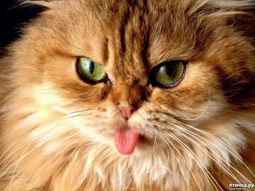

Кошки обладают удивительными анатомическими и поведенческими особенностями, которые делают их одними из самых успешных хищников и популярных домашних питомцев в мире. Например, их скелет состоит из более чем двухсот тридцати костей, что значительно превышает количество костей у взрослого человека, а отсутствие жесткой ключицы позволяет им протискиваться в любые отверстия, куда проходит их голова. Уникальные кошачьи усы, называемые вибриссами, служат важнейшим органом осязания и помогают животным ориентироваться в пространстве, определять скорость ветра и даже оценивать расстояние до предметов в полной темноте.